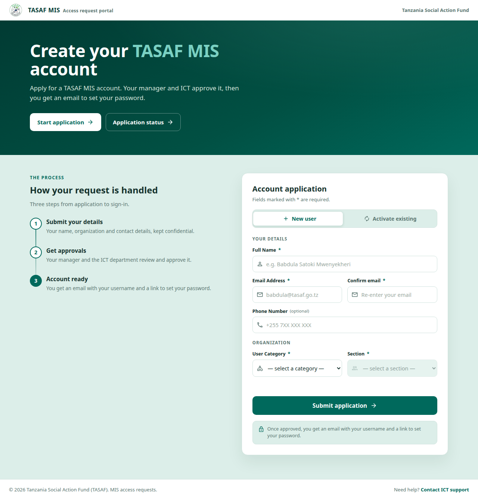
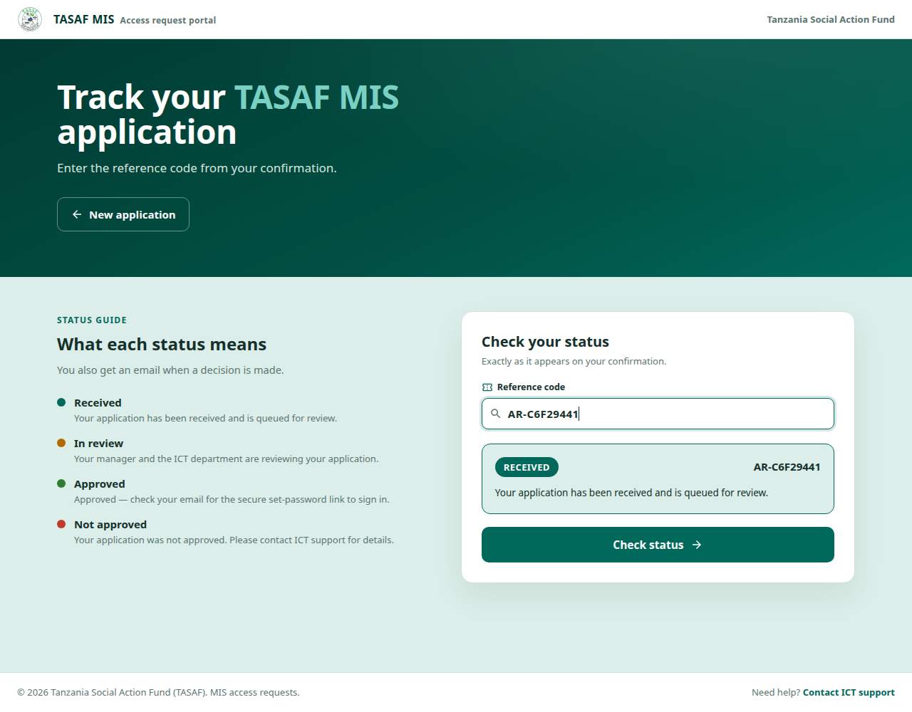
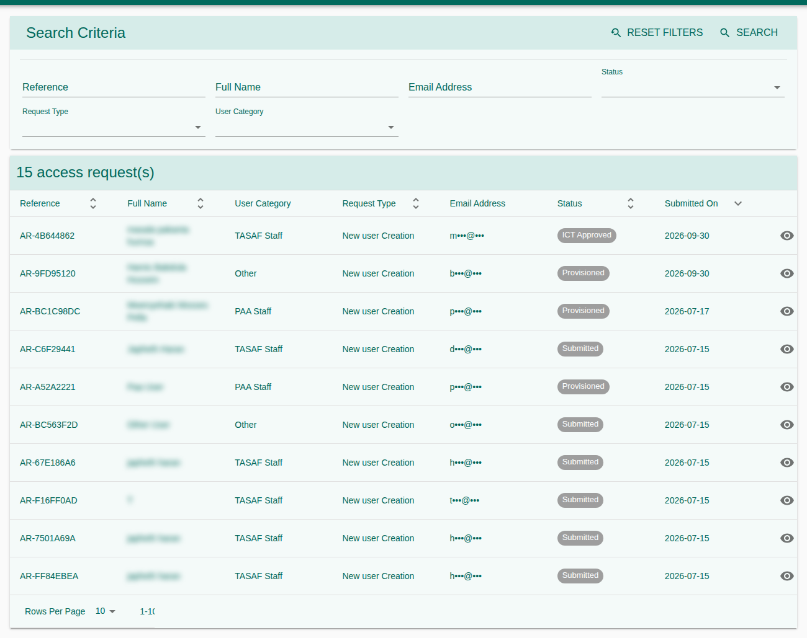
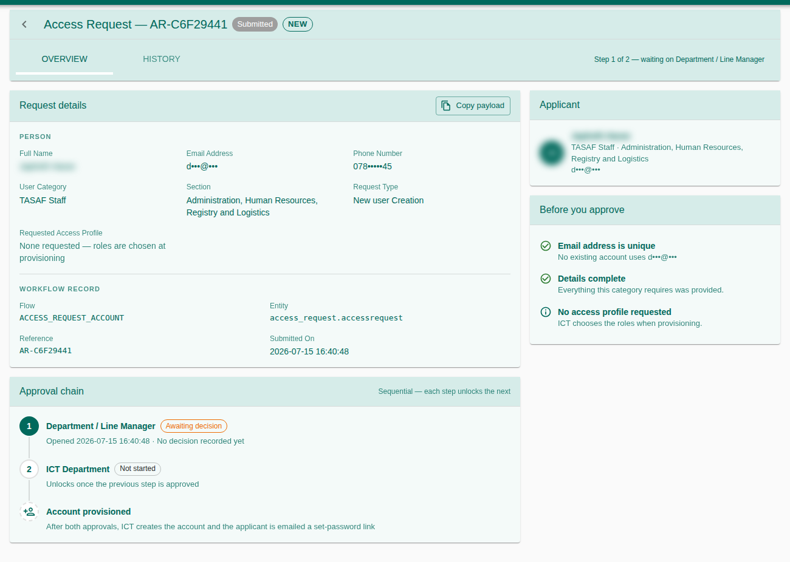
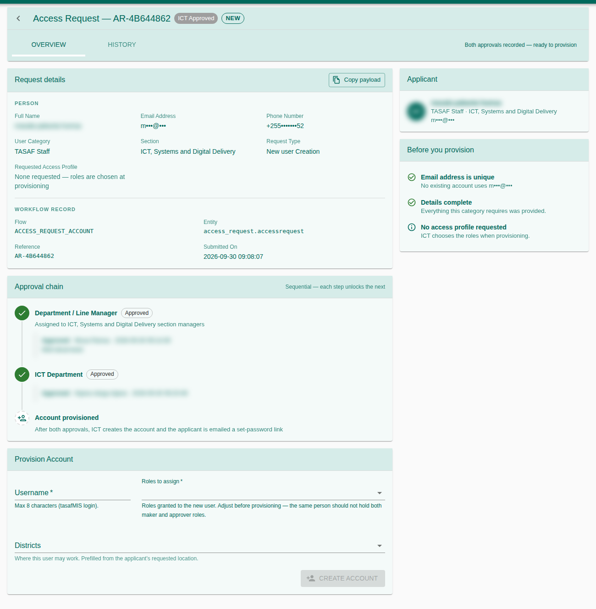

How a person applies for a TASAF MIS account, how managers and ICT approve it, and how ICT creates or activates the account. Nobody gets an account without two approvals: the applicant's section manager, then the ICT department.
1. Purpose, Roles, and Access
| Role | Typical work |
|---|---|
| Applicant (no login) | Fill the public form; check the status. |
| Section manager (Access Request Sponsor) | First approval, for applicants of their own section. |
| ICT officer | Second approval; create or activate the account and choose its roles and districts. |
| Administrator | Name section managers; sign when a section has none. |
| Right | Grants |
|---|---|
230101 / 230102 | The Access Requests list / open a request. |
230201 | Manager approval. |
230202 | ICT approval and account creation. |
230301 | Manage access profiles and section managers. |
2. Apply for an Account (Applicant)
- On the TASAF MIS login page click Request Access, then Start application.
- Choose New user, or Activate existing if you had an account that is no longer active.
- Fill your details: full name, email (twice), phone (e.g. +255 712 345 678), section, job title, user category (TASAF Staff, PAA Staff, Other) and administrative level with its location. External applicants give their organization name.
- Press Submit application. Keep the reference code shown on screen.


3. Check the Application Status
Click Application status on the access page and enter the reference code exactly as it appears on the confirmation.
| Shown | Meaning |
|---|---|
| Received | Queued for review. |
| In review | Your manager and ICT are reviewing it. |
| Approved | Your account is ready; you receive your username and how to set your password. |
| Not approved | Contact ICT support for details. |


4. The Access Requests List
Open Administration → Access Requests. Filter by status, request type and user category; double-click a request to open it.


5. Approve or Reject a Request
Approvers act from the Tasks inbox or from the request page. The page has three tabs:
- Overview: the applicant, request details, and Before you approve checks, e.g. Email already has an account (consider an activation instead), No account to activate, Missing fields.
- Approvals: the approval chain. Each step unlocks the next; the header says which step is waiting.
- History: every decision, in order.
- Read the checks on the Overview tab.
- Write a Decision note; it is required to reject and visible to the next approver.
- Press Approve or Reject.


6. Create or Activate the Account (ICT)
When both approvals are recorded the header reads ready to provision.
- Check the Username (at most 8 characters).
- Choose the Roles to assign. The same person should not hold both maker and approver roles.
- Check the Districts where the user may work; they are prefilled from the requested location.
- Press Create account (or Activate account).
- The Account ready window shows the username. If a temporary password is shown, it is shown only once: give it to the user privately and ask them to change it after first login (Profile → Change password). Otherwise the user sets the password from the emailed link.


7. Section Managers
On the Section managers tab of the Access Requests page, add the users who approve requests for each section. A section with no manager is signed by an administrator. A user listed without the Access Request Sponsor role cannot approve and is marked so.
8. Statuses
| Status | Meaning |
|---|---|
| Submitted | Waiting for the section manager |
| Manager Approved | Waiting for ICT |
| ICT Approved | Ready to provision |
| Provisioned | The account exists |
| Rejected | No account will be created |
| Provisioning Failed | See the provisioning error in the request details |
9. Troubleshooting
| Problem | What to do |
|---|---|
| “Too many attempts” | Wait a minute and try again. |
| The reference code is not found | Check it character by character. |
| No manager can approve a request | Add a section manager, or an administrator signs. |
| Provisioning failed | Read the error (often a username already in use), correct it and provision again. |